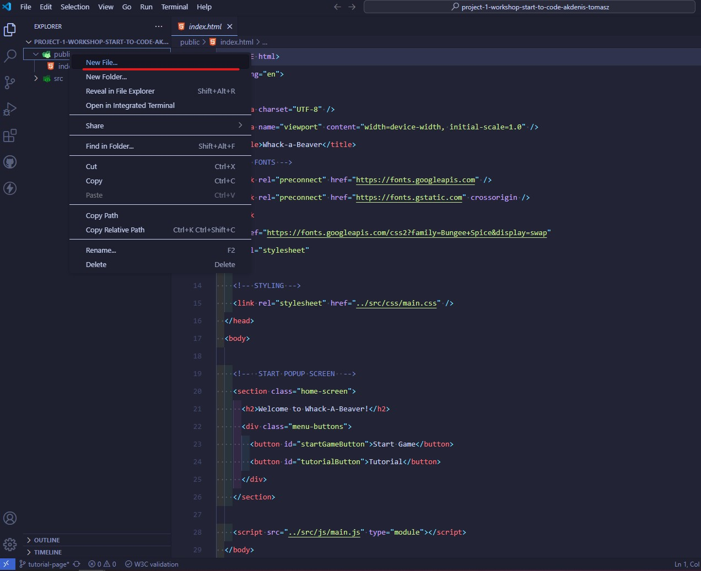
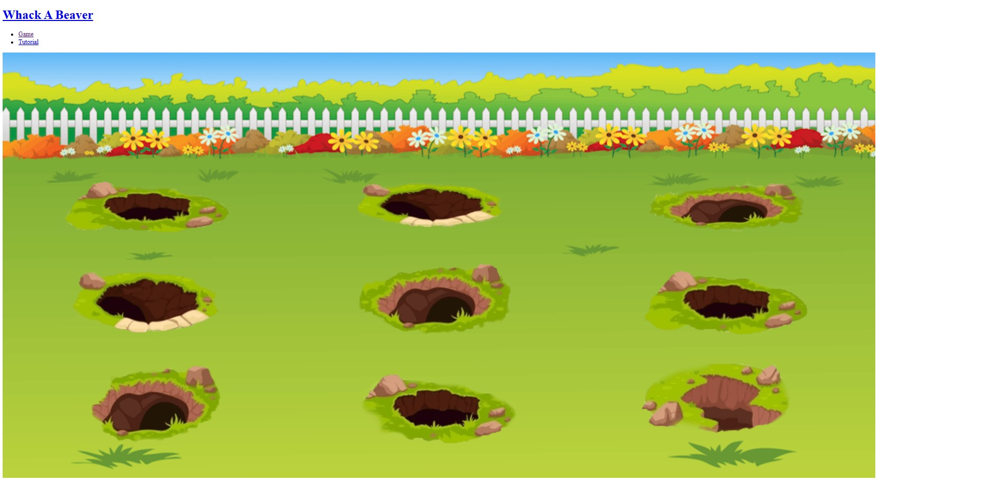
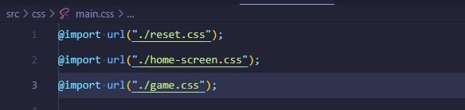
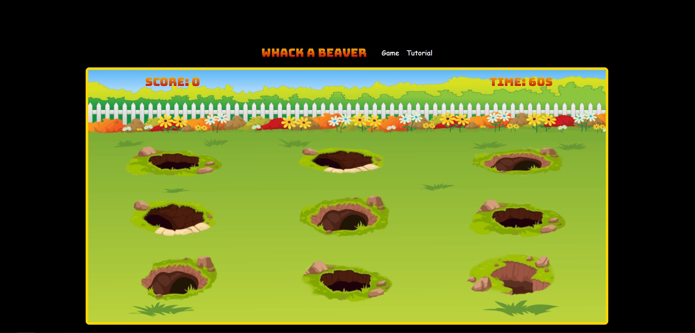
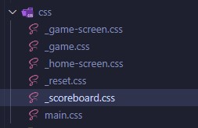

Een introductie tot het programmeren met het bouwen van een klein spel!
We gaan een spel maken waarbij de gebruiker via de muis, bevers zal moeten aanklikken en zo punten te scoren. Zo ga je punten scoren, en kan je het openen tegen vrienden of familie!
Hiervoor gaan we 3 codetalen gebruiken
- HTML
- CSS
- JavaScript
Klaar om een nieuwe wereld te ontdekken?
Om deze applicatie te bouwen gaan we een tool gebruiken: Visual Studio Code
Je kan deze downloaden van de bovenstaande link
- 1.1 Hier kan je de bronbestanden vinden!
- 1.2 Open het programma Visual Studio Code. en open de folder die je zopas aangemaakt hebt.
- 1.3 Installeer de live server extensie in Visual Studio Code; die ziet er zo uit:
- 1.4 Je kan nu de LiveServer starten door met je rechter muisknop te klikken op "index.html" en vervolgens "Open with live server" te kiezen.
Tijd om ons spel mooi te maken en ons canvas een likje "code-verf" te geven, zodat we meer zien dan enkel een witte pagina.
- 2.1 Kopieer onderstaande code in jouw index.html-bestand. Bewaar vervolgens dat bestand. Dit is de basis-structuur waar we op zullen verder werken.
-
2.2
In onze css folder maken we een nieuwe file aan genaamd "_home-screen.css".
In deze file zetten we de volgende code Dit zal een aantal basisstijlen bevatten waardoor we al een eerste glimps krijgen van hoe het eruit zal zien. - 2.3 Als je het resultaat nu bekijkt zou het er zo moeten uitzien:
- 2.3 Laten we nu ook de knoppen veranderen om verder te gaan naar het effectieve spel. Proficiat je eerste werkende pagina is klaar!
- 2.4 Hier kunnen we ook nog een klein effectje aan de knoppen toevoegen.
Voor de game pagina hebben we enkele onderdelen nodig om erin te zetten:
Zoals de achtergrond, de gaten en de bevers! Laten we areen beginnen.
- 3.1
Aller eerst moet je een nieuw HTML bestand aanmaken. Dat doe je door je public filder te selecteren, rechter muisklik en "new file" aan te klikken.
Nu, deze gemaakt is kunnen we verder!
- 3.2
In dit bestand moet je alvast enkele dingen toevoegen. Kopieer alvast deze code in dit bestand.
See the Pen Untitled by jeffe (@lopi5639) on CodePen.
Zoals je kan zien, begint elke webpagina bijna altijd hetzelfde.
- 3.3
We zullen nu de gamepagina voorzien van een navigatie, speelbord, score en timer, zodat iedereen zijn score kan zien en de hoeveelheid tijd die ze nog hebben om op de bevers te klikken.
Je kan de volgende code kopiëren in je bestand.
Je mag de lijn "Hier komt code" verwijderen en vervangen met het volgende snippet code.See the Pen Untitled by jeffe (@lopi5639) on CodePen.
Ziezo! Hier heb je een navigatie element teogevoegd. Deze zit nog een in een <header>
- 3.4
Nu hebben we een navigatie op onze gamepagina.
Volgende stap zal het toevoegen zijn van het spelbord. Je hebt deze files al gedownload in het begin. De prent die we gebruiken voor het spelbord zal dan ook in de images folder zitten.
Deze moeten we nu ook nog toevoegen aan onze pagina.
Voeg dit stukje code mee in je code onder de laatste </header> tagSee the Pen Untitled by jeffe (@lopi5639) on CodePen.
Nadat je deze code hebt toegevoegd zal je ook een "Timer" en een "Score" moeten maken. Deze zullen we in de volgene stap maken.
- 3.5
In deze stap zullen we de "Timer" en de "Score" maken. Vervang de comment "Hier komt de timer en score" met volgende code.
- 3.6
Normaal zou je nu ongeveer dit moeten hebben:
 - 3.7
Je bent goed onderweg!
In de volgende stap zullen we het uitzicht van de game aanpakken.We moeten een lijn code toevoegen aan ons bestand en een nieuw bestand aanmaken in de css map
Zet de volgende code onder de comment "Styling".<link rel="stylesheet" href="../src/css/main.css" /> - 3.8
Styling!
In dit stukje zullen we het uitzicht van de game onder de loep nemen.
Daarvoor moeten we een nieuw bestand toevoegen in de css folder.Deze zal de naam krijgen "_game.css"
In je "main.css" bestand zal je die ook moeten importeren door: "@import url("./_game.css");" toe te voegen.
Nu kunnen we het beginnen stylen.
- 3.9
We zullen beginnen met ons speelveld een hoogte en breedte te geven.
- 3.10
Nu zullen we ons speelbord opstellen; eveneens zullen we de achtergrond op de juiste grootte zetten.
See the Pen Untitled by jeffe (@lopi5639) on CodePen.
Wat we hier hebben gedaan, is het volgende: We hebben van ons speelveld een grid gemaakt. Dit grid hebben we voorzien van rijen en kolommen van een bepaalde grootte. De artikelen die erin komen, hebben we gecentreerd en onderaan uitgelijnd. De achtergrond hebben we verspreid over heel het grid, zodat de bevers uit de gaten kunnen komen.
- 3.11
Het volgende dat mooi gemaakt moet worden is de score en de tijd!
See the Pen game-css-time/score by jeffe (@lopi5639) on CodePen.
- 3.12
Nu moeten we de bever nog een correcte grootte geven en hem juist positioneren! Voor later moeten we hem ook een extra waarde toedienen.
De waarde zal ervoor zorgen, als we straks de functionaliteit doen, dat als de bever wordt aangeklikt deze ook verdwijnt. - 3.13
Nu nog een belangrijk detail: we moeten het grid gelijkstellen aan de gaten waar de bever uit zal komen.
Dit gaan we doen door het grid aan te passen en elk vak een bepaalde grootte en breedte te geven.See the Pen game-css-grid/holes by jeffe (@lopi5639) on CodePen.
- 3.12
Je spelbord zou er momenteel zo moeten uitzien
Mooi zo!
We hebben hier het lettertype aangepast, alsook de positie in het grid, en een kleine kopruimte gegeven.
Hier in dit stukje gaan we ons focussen op het maken van het score bord!
- 4.1
Zoals in de vorige stappen, beginnen we eerst met het aanmaken van onze DOCTYPE.
See the Pen scoreb-html/start by jeffe (@lopi5639) on CodePen.
- 4.2
Net zoals de andere pagina's heeft deze ook een navigatie nodig, zodat we altijd terug kunnen naar een andere pagina.
- 4.3
Nu moeten we deze pagina vullen met informatie om een scorebord te maken.
De volgende code zal ervoor zorgen dat je een tabel hebt met rijen waar je "Positie", "Naam" en "Score" kan terug vinden.
See the Pen score-layout by jeffe (@lopi5639) on CodePen.
- 4.4
Nu moeten we nog de knoppen aanmaken waarmee je het spel kan herstarten of sluiten. We hebben hier ook een knop toegevoegd om naar deze tutorial te gaan.
Je mag nu de blauwe comment verwijderen en in de plaats daarvan deze code kopiëren.
See the Pen score-btns by jeffe (@lopi5639) on CodePen.
Ziezo! Dit zou moeten volstaan voor de elementen van het scorebord.
-
We zullen dit scorebord nog stylen, en dan kunnen we aan de functionaliteit beginnen van heel het spel. Want momenteel hebben we enkel
een mooi spelbord, maar alle functionaliteit die een spel een spel maakt, zit er nog niet in. - 4.5
We zullen beginnen met ons document te connecteren met het CSS bestand. Voeg de volgende lijn code bij onder de comment "Styling"
<link rel="stylesheet" href="../src/css/main.css" /> - 4.6
Nu maken we een nieuw bestand aan in de CSS folder met de naam: "_scoreboard.css"
 - 4.7
Om te beginnen geven we een grootte aans ons scorebord en stellen we het font in. Deze code mag je toevoegen aan het nieuwe aangemaakte bestand.
We stellen ook in hoe onze lijstelementen eruit zullen zien.See the Pen score-css/layout by jeffe (@lopi5639) on CodePen.
- 4.8
We maken ook alvast een styling aan voor onze start timer. Deze zal van 3 naar 0 tellen en zal in het javascript gedeelte aangemaakt worden.
Maar het is goed om deze al te maken. - 4.9
Nu zullen we een styling maken voor het venster dat zal verschijnen na het spel is afgelopen. Hier zullen we onze scoren aan kunnen toevoegen.
- 4.10
Dit zal een iets langer stukje code zijn. Maar deze code heeft allemaal te maken met hoe de elementen binnen in het venster, waar je je score kan ingeven, eruit zullen zien.
See the Pen score-modal/inputs by jeffe (@lopi5639) on CodePen.
Deze code zorgt er ook voor dat onze knoppen zullen reageren als je erover gaat met de muis. Met het :hover pseudo-element zorgen we er dus voor dat de achtergrondkleur verandert en het iets groter zal worden.
- 4.11
We maken nu ook een animatie aan, zodat we het scherm zien verschijnen op een aangenamere manier.
See the Pen score-animation by jeffe (@lopi5639) on CodePen.
- 4.11
We moeten nu ook nog de knoppen van het scorebord zelf een styling geven.
See the Pen score-buttons/ain by jeffe (@lopi5639) on CodePen.
Bemerk ook dat we hier weer een :hover pseudo-element hebben gebruikt, voor de functionaliteit van de knop als je erover gaat met de muis.
-
Dat is dan ook al klaar! Op naar de volgende stap.
Volgende deeltje is tevens ook het moeilijkste! We gaan beginnen aan de functionaliteit van heel het spel. Hiervoor gaan we de codetaal JavaScript gebruiken.
- 5.1
- 5.2
- 5.3
- 5.4
- 5.5
- 5.6
- 5.7
- 5.8
- 5.9
- 5.10
- 5.11
- 5.12
- 5.13
- 5.14
- 5.15
- 5.16
- 5.17
- 5.18
- 5.19
- 5.20
- 5.21
- 5.22
- 5.23
- 5.24
- 5.25
- 5.26
- 5.27
- 5.28
- 5.29
- 5.30